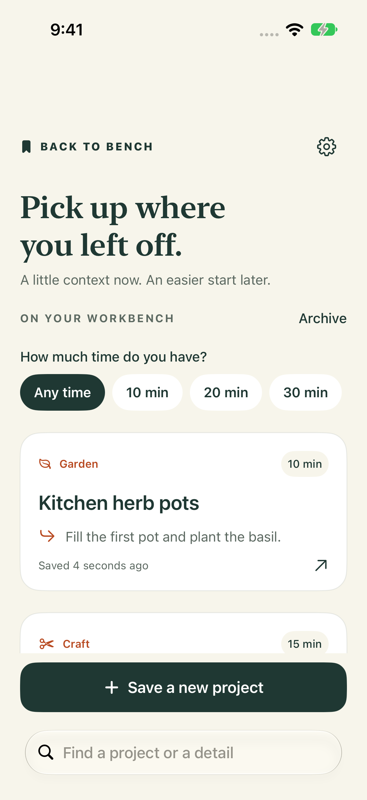
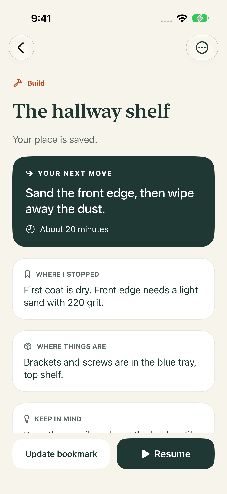

When you pause
Leave your future self a clear next step.
Note the exact state, what to do next, a snag, and where the tools or materials are. Add an optional photo and an estimate for your next session.
For the work you come back to
Save the state of a hands-on project and the next small move. When life interrupts, leave yourself a useful way back.
Planned US price: $2.99 one-time. No subscription.
Fit the top.
Mark the holes.
A little context now.
An easier start later.
Leave a good bookmark
A shelf half-built. A garden bed waiting for the next dry weekend. A sketch with one good idea left to try. Back to Bench keeps the little details together so you do not have to piece them back together from memory.
When you pause
Note the exact state, what to do next, a snag, and where the tools or materials are. Add an optional photo and an estimate for your next session.
When you return
Search project names and details, revisit recent pause notes, or put finished and on-hold work in the archive.
When time is short
Use the visual timebox to make a next step feel manageable. It has no alarm and no streak to maintain.
Room for all kinds of making
A look at the app


Good to know
Project notes and photos are stored in the app on your iPhone. The app has no account or developer-operated cloud sync. iOS device backups may include app data depending on your device and Apple account settings.
In Settings, choose Export a backup to create a JSON copy, then save it to a destination you choose. Export is manual, not automatic; that destination may store, sync, or share the file under its own settings. You can delete a project in the app. Deleting Back to Bench removes its local app data, but exported files and device backups must be managed separately.
Normal imports use Merge: projects with new IDs are added, and projects with matching IDs are replaced by the backup copy. Reminders are turned off after import; edit a project to set one again. If the app detects an unreadable saved file, a recovery action can use a valid backup while preserving the unreadable file on the device.
Reminders use on-device notifications and require notification permission. Depending on your iOS notification settings, the project name and next step may appear on your Lock Screen. The session timebox is visual only and has no alarm.
Your notes, your choice
Projects are stored in the app on your iPhone. There is no app account, advertising, analytics, developer-operated cloud server, or cloud sync. You can export a JSON copy or import one using the iOS file interface. iOS device backups may include app data depending on your device and Apple account settings.
Imports use Merge: new projects are added, matching projects are replaced by the backup copy, and reminders are reset. Backup files support up to 500 projects and 100 MB; each stored photo is limited to 2 MB.
Read the privacy policyBack to Bench
Public release is in preparation. There is no public App Store or TestFlight download link yet; a link will be added here after Apple approval.